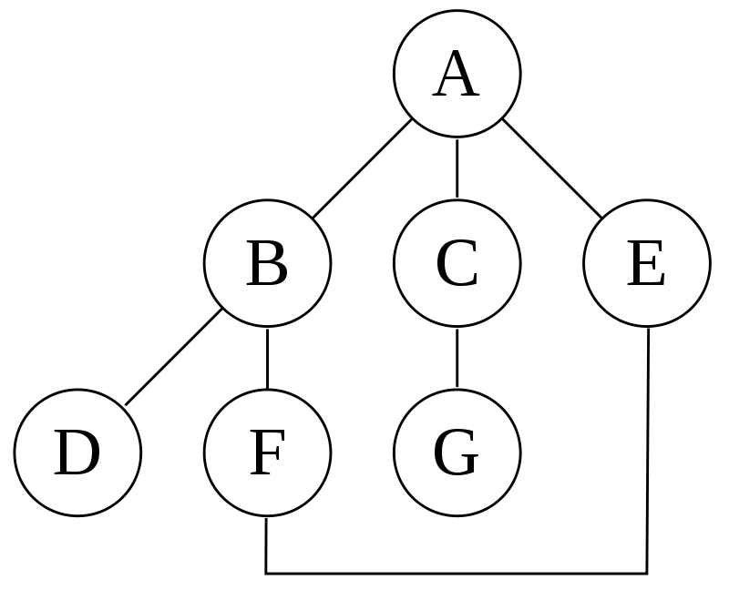

Una Búsqueda en profundidad (en inglés DFS o Depth First Search) es un algoritmo de búsqueda no informada utilizado para recorrer todos los nodos de un grafo o árbol (teoría de grafos) de manera ordenada, pero no uniforme. Su funcionamiento consiste en ir expandiendo todos y cada uno de los nodos que va localizando, de forma recurrente, en un camino concreto. Cuando ya no quedan más nodos que visitar en dicho camino, regresa (Backtracking), de modo que repite el mismo proceso con cada uno de los hermanos del nodo ya procesado.
Para el grafo siguiente:
Una búsqueda en profundidad empezando en el nodo A, con la suposición que las aristas a la izquierda son escogidas antes de las aristas a la derecha, el algoritmo va a visitar los nodos en esta orden: A, B, D, F, E, C, G. Se puede notar que, si el algoritmo no recuerde los nodos ya visitados, el algoritmo podría continuar en una vuelta infinita A, B, D, F, E, A, B, D, F, E, etc. sin visitar C o G.
A continuación se muestra un video que explica un ejemplo de esto en el siguiente link: https://www.youtube.com/watch?v=UYtnHmls2ec